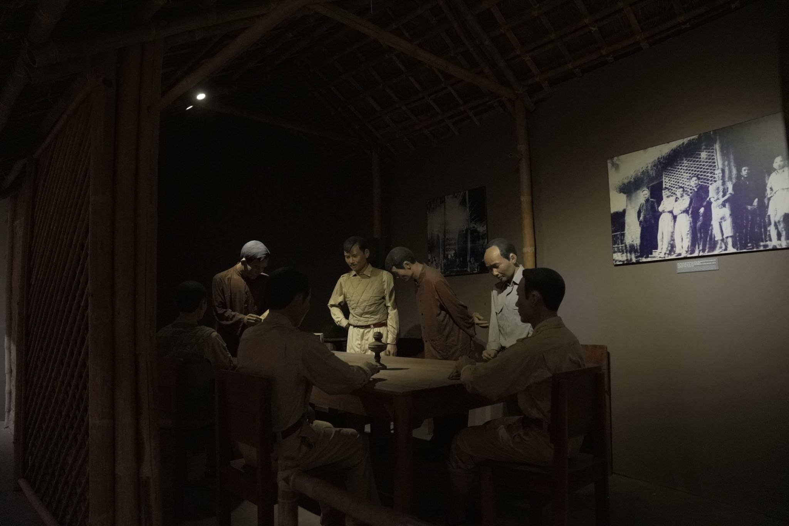
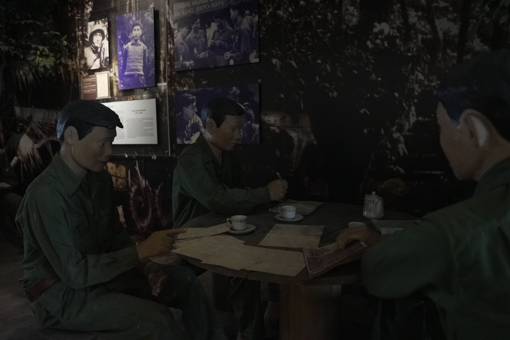
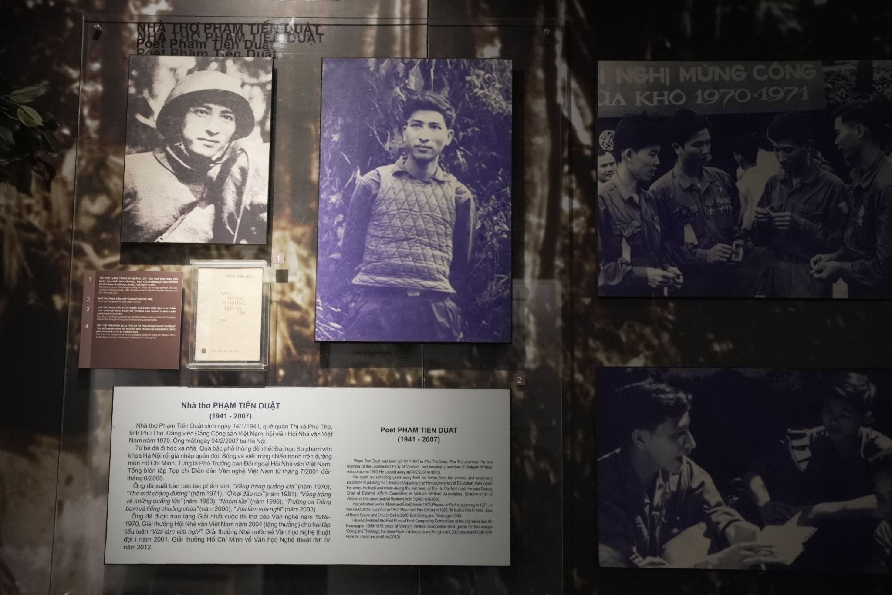
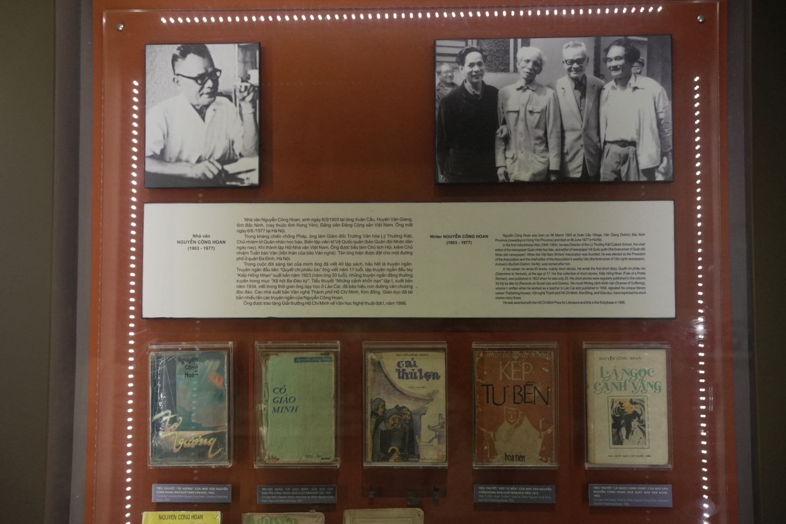

Trong bài
Có những trang viết không chỉ kể về chiến tranh mà còn lưu giữ ký ức của cả một thời đại. Tại Tầng 3 Bảo tàng Văn học Việt Nam, những tác phẩm, tư liệu và câu chuyện về các thế hệ đi qua chiến tranh được tái hiện qua nhiều vùng đất và số phận. Ở đó, văn chương trở thành một cách để nhìn lại quá khứ và lắng nghe những âm vang còn lại của lịch sử.
Đi qua chiến tranh qua những trang viết
Chiến tranh trong văn học không chỉ được ghi lại bằng những trận đánh hay những con số. Đó còn là câu chuyện về con người, quê hương, sự chia ly, mất mát và niềm tin. Bởi vậy, hành trình đi qua chiến tranh của văn chương Việt Nam cũng là hành trình ghi lại những biến động sâu sắc của đất nước trong một giai đoạn đặc biệt.

Tại Tầng 3, người xem có thể tìm thấy dấu ấn của nhiều thế hệ tác giả từng sống, viết và sáng tác trong những năm tháng chiến tranh. Không gian trưng bày giới thiệu các tác giả, tác phẩm và tư liệu gắn với nhiều vùng miền như Khu V, Nam Trung Bộ, miền Bắc và miền Nam.
Mỗi vùng đất mang một hoàn cảnh lịch sử khác nhau, nhưng cùng góp phần tạo nên diện mạo của văn học kháng chiến. Những trang viết ấy không đứng ngoài lịch sử mà được hình thành từ chính những trải nghiệm của con người trong thời đại chiến tranh.
Tầng 3 – Nơi văn học kháng chiến được lưu giữ
Nếu chiến tranh là một phần của lịch sử dân tộc thì văn chương chính là một trong những cách lưu giữ ký ức về lịch sử ấy. Tại Tầng 3, câu chuyện đi qua chiến tranh được kể bằng những dấu tích cụ thể của đời sống văn học.

Đó có thể là tư liệu về một nhà văn, một tác phẩm, một vùng sáng tác hay những dấu mốc trong hành trình cầm bút. Đằng sau mỗi hiện vật là câu chuyện về một con người từng lựa chọn viết giữa những năm tháng đầy biến động.
Điểm đáng chú ý của không gian này là sự hiện diện của các tác giả đến từ nhiều khu vực. Từ Khu V, Nam Trung Bộ đến miền Bắc và miền Nam, mỗi vùng đất lại mang đến một sắc thái riêng cho văn học kháng chiến. Có nơi nổi bật với những trang viết về chiến trường, có nơi ghi lại đời sống của người dân, cũng có những tác phẩm hướng đến tình yêu quê hương và khát vọng hòa bình.
Nhờ đó, người xem không chỉ nhìn thấy chiến tranh qua những sự kiện lớn mà còn có thể cảm nhận nó từ góc nhìn của những người trực tiếp sống trong thời đại ấy.
Đi qua chiến tranh và những số phận người viết
Một trong những điều khiến văn chương về chiến tranh vẫn có sức lay động là phía sau mỗi tác phẩm luôn có một con người cụ thể. Họ vừa là người chứng kiến lịch sử, vừa là người ghi lại lịch sử bằng ngôn ngữ của mình.

Những nhà văn xuất hiện trong không gian Tầng 3 vì thế không chỉ được nhìn nhận qua tên tuổi hay tác phẩm. Câu chuyện về họ còn gắn với những vùng đất, những năm tháng và những lựa chọn trong cuộc đời sáng tác.
Có những người viết từ chiến trường, có người viết giữa những vùng quê, có người mang theo ký ức chiến tranh trong suốt hành trình sáng tác sau này. Những khác biệt ấy tạo nên nhiều góc nhìn về cùng một thời đại.
Hành trình đi qua chiến tranh vì thế không giống nhau với mỗi người. Có người đi qua bằng trải nghiệm trực tiếp, có người bằng ký ức, có người bằng những câu chuyện được truyền lại. Nhưng khi được đặt cạnh nhau trong không gian bảo tàng, những câu chuyện riêng ấy cùng tạo nên một bức tranh rộng hơn về con người Việt Nam trong chiến tranh.
Những trang viết còn lại sau chiến tranh
Tầng 3 không chỉ kể câu chuyện của quá khứ. Những tư liệu được lưu giữ tại đây còn đặt ra câu hỏi về cách một thế hệ hôm nay nhìn lại những năm tháng đã qua.

Trong đó có những tác giả được trao Giải thưởng Nhà nước, ghi nhận những đóng góp đối với nền văn học Việt Nam. Việc đưa tác phẩm và dấu ấn của họ vào không gian bảo tàng giúp người xem hiểu hơn về giá trị của những sáng tác được hình thành trong và sau chiến tranh.
Điều quan trọng hơn, văn chương giúp lịch sử trở nên gần gũi với con người. Một cuộc chiến có thể được ghi lại bằng những mốc thời gian, nhưng một tác phẩm văn học lại có khả năng lưu giữ cảm xúc, ký ức và những câu chuyện đời thường.
Bởi vậy, đi qua chiến tranh không có nghĩa là quá khứ biến mất. Những trang viết còn lại tiếp tục đưa ký ức ấy đến với những thế hệ chưa từng sống trong chiến tranh. Đó cũng là cách văn học Việt Nam nối quá khứ với hiện tại.
Với người trẻ, không gian này có thể mở ra một cách tiếp cận khác về lịch sử. Thay vì chỉ nhìn chiến tranh qua những sự kiện, họ có thể nhìn thấy con người trong chiến tranh, những người đã sống, viết và để lại ký ức bằng văn chương.
Văn chương như một cách nhớ
Có lẽ giá trị đặc biệt của không gian Tầng 3 nằm ở khả năng biến những tư liệu tưởng như thuộc về quá khứ thành những câu chuyện vẫn có thể đối thoại với hiện tại.
Mỗi tác phẩm, mỗi tư liệu hay câu chuyện về một nhà văn đều góp thêm một mảnh ghép vào ký ức chung. Khi những mảnh ghép ấy được lưu giữ trong bảo tàng, văn chương không chỉ còn là những dòng chữ trên trang giấy mà trở thành một phần của ký ức văn hóa.
Hành trình đi qua chiến tranh của những trang viết vì thế vẫn tiếp tục. Từ thế hệ này sang thế hệ khác, văn chương giúp người đọc hiểu hơn về một thời đại, về những con người đã sống trong thời đại ấy và về giá trị của hòa bình hôm nay.
Tầng 3 Bảo tàng Văn học Việt Nam là nơi những câu chuyện đi qua chiến tranh được lưu giữ bằng tư liệu, tác phẩm và ký ức của nhiều thế hệ nhà văn. Qua không gian ấy, văn học kháng chiến không chỉ thuộc về quá khứ mà tiếp tục trở thành cầu nối để thế hệ hôm nay hiểu hơn về lịch sử, con người và văn chương Việt Nam.
Bảo tàng Văn học Việt Nam